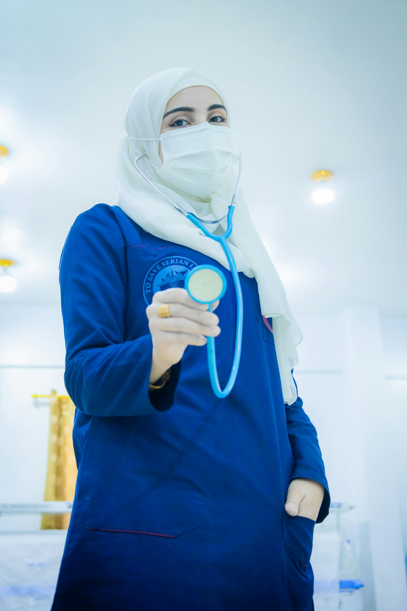

Skrining gerak pra-kunjungan
Deteksi Dini Gangguan Saraf Dari Kamera Anda
Tremvia menganalisis tremor, pola jalan, dan biomarker motorik melalui kamera perangkat Anda, membantu deteksi awal Parkinson dan gangguan neurologis lainnya tanpa perangkat tambahan.
6 tes gerak terpandu, cukup kamera
75 s · tanpa sensor tambahan

60,6 %akurasi uji internal
Video tidak keluar dari perangkat
Deteksi titik tubuh berjalan di dalam browser. Yang terkirim hanya angka hasil pengukuran.
Kondisi yang Dapat Dideteksi:
- Parkinson
- Essential Tremor
- Pasca Stroke
- Ataksia Serebelar
Tes
6 Biomarker yang Dianalisis
Setiap parameter diukur menggunakan estimasi pose dari kamera, tanpa sensor fisik tambahan.
- TremorMengukur frekuensi dan amplitudo getaran tangan saat diam.10 s
- Ketukan JariMengukur kecepatan ketukan dan penurunan amplitudo akibat kelelahan gerak.10 s
- Pola JalanMengukur kadense, panjang langkah, dan simetri berjalan.15 s
- Ayunan LenganMengukur selisih amplitudo ayunan lengan kiri dan kanan saat berjalan.15 s
- KeseimbanganMengukur goyangan titik berat tubuh saat berdiri diam.15 s
- Rentang Gerak LututMengukur sudut maksimum tekukan dan luruskan lutut.10 s
10detik
5,2Hz dominan
1,8mm amplitudo
Cara kerja
Perhitungannya terjadi di perangkat Anda
Deteksi titik tubuh dan penghitungan biomarker berjalan di dalam browser Anda. Video tidak pernah diunggah, tidak pernah disimpan, dan tidak pernah melewati server kami. Yang dikirim hanya angka hasil pengukuran.
Tiga langkah
- 1. RekamIkuti satu instruksi gerakan di layar. Kamera membaca titik tubuh selama beberapa detik.
- 2. UkurFrekuensi, amplitudo, simetri, dan kecepatan gerak dihitung di perangkat Anda.
- 3. Baca artinyaSetiap angka tampil bersama rentang normalnya, jadi Anda tahu apa yang dibandingkan.